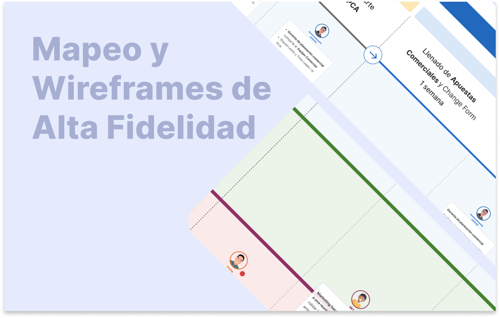
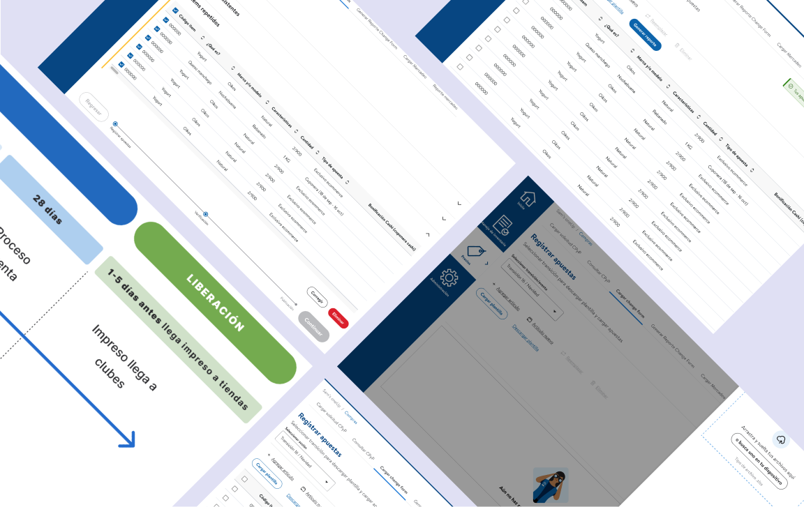

De la investigación a la propuesta de valor:
Proyecto UX/UI End-to-End


Lideré el mapeo de procesos para identificar puntos críticos y detectar oportunidades de mejora. Diseñé soluciones basadas en datos, trabajando de forma ágil con equipos multifuncionales. Apliqué buenas prácticas de UX e implementé un sistema de diseño escalable para optimizar la eficiencia y la coherencia del producto.
Tareas:
- * Definición de objetivos, plan de investigación y perfiles clave de usuarios
- * Mapeo de procesos para detectar oportunidades de optimización
- * Análisis del proceso actual y propuesta de mejoras
- * Identificación de puntos críticos y áreas de oportunidad en el journey del usuario
- * Diseño de experiencias actuales (As-Is) y futuras (To-Be)
- * Creación de wireframes, prototipos y documentación UX/UI
- * Pruebas con usuarios para validar las soluciones
- Software: Figma, Jira, Mural, Illustrator, Office Suite